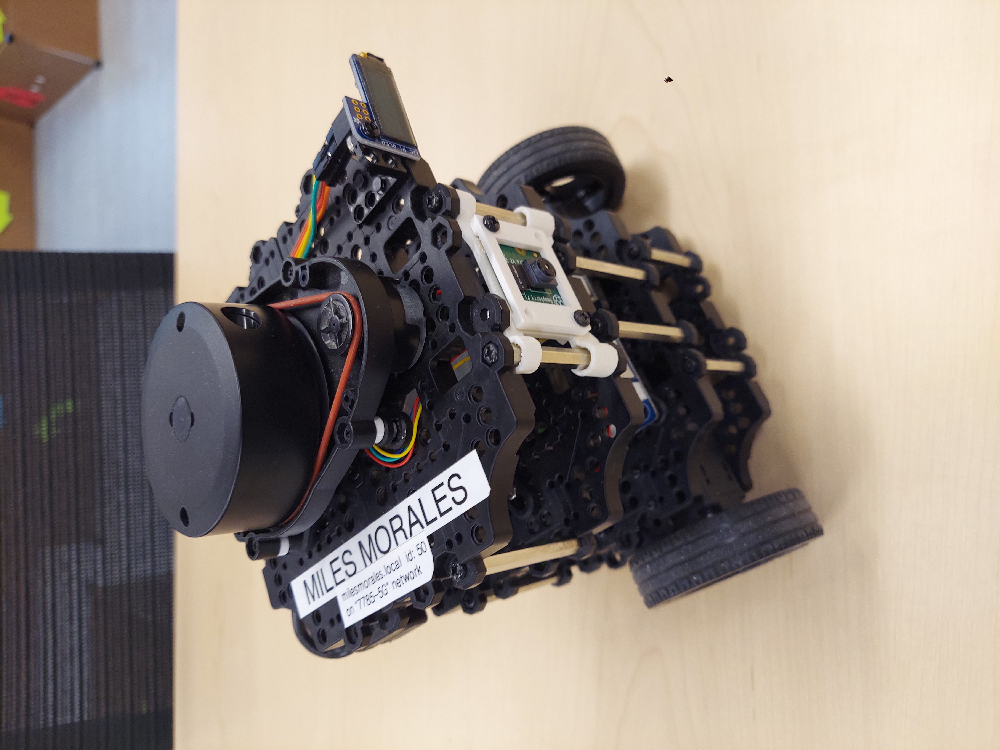

ROS2 Autonomous Maze Solver

I spent some time working with a partner on a software package to solve a simple maze. The maze was constructed such that signs on the walls pointed the way to the goal, and were key to solving the maze. My partner and I created a ROS2/Python package to solve the maze by using machine and ROS2 Nav2. A simple conditional state machine controlled the robots behavior. The robot would default to moving forwards if the path was unobstructed. If the forward path was obstructed, it would attempt to classify the sign on the wall in front of it. It would then turn according to the classified command (left, right, 180). Fallback behaviors were included in the case of bad readings or incorrect positioning.
Our final submission achieved 90% sign classification accuracy, and was able to complete the maze properly and without error in 5/6 tests. The code we used can be seen in my Github.